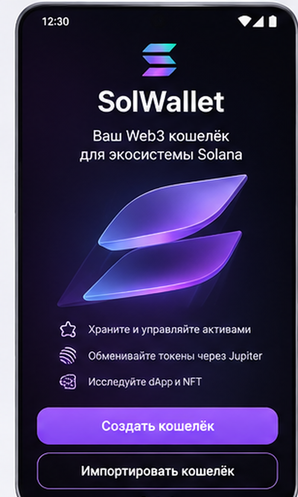

◈
Кошелёк Solana
Интерфейс для просмотра активов сети Solana.
SolWallet Native — приложение для Android с интерфейсом управления токенами Solana, историей операций и инструментами Web3.
APK для Android · Версия 0.7.0 · Не вводите seed-фразы на веб-сайте.

Описание интерфейса приложения. Доступность операций зависит от сборки и подключённых сервисов.
Интерфейс для просмотра активов сети Solana.
Экраны адреса, QR-кода и подготовки транзакции.
Интерфейс обмена и работы с токенами.
Поиск по названию и mint-адресу.
Просмотр истории операций кошелька.
Сеть, провайдеры и параметры приложения.
Иллюстрации интерфейса; могут отличаться от фактической установленной версии.



Ни поддержка, ни сайт не должны запрашивать фразу восстановления или приватный ключ.
Перед отправкой убедитесь в правильности сети, адреса и суммы.
Сверяйте контрольную сумму SHA-256 скачанного файла с опубликованной ниже.
Независимый аудит безопасности приложения не подтверждён. Не используйте непроверенную сборку для хранения значительных средств.
Версия 0.7.0 · APK · 44.4 МБ (примерно)
SHA-256:
20a7615a5ef4c32621f6ed7aef502b7781ee45a18cdbae5e0a6ed71cb81f19aa
Для установки APK Android может запросить разрешение на установку из выбранного источника. Скачивайте файл только с официального сайта.
Нажмите «Скачать APK», откройте файл на Android и следуйте системным подсказкам. При необходимости разрешите установку из этого источника.
Приложение предназначено для экосистемы Solana. Уточняйте выбранную сеть в настройках перед операциями.
Обновлённые версии будут публиковаться на этой странице после подготовки и проверки сборки.
Напишите на MorganDaniel1808@outlook.com. Никогда не отправляйте в письме seed-фразу или приватный ключ.